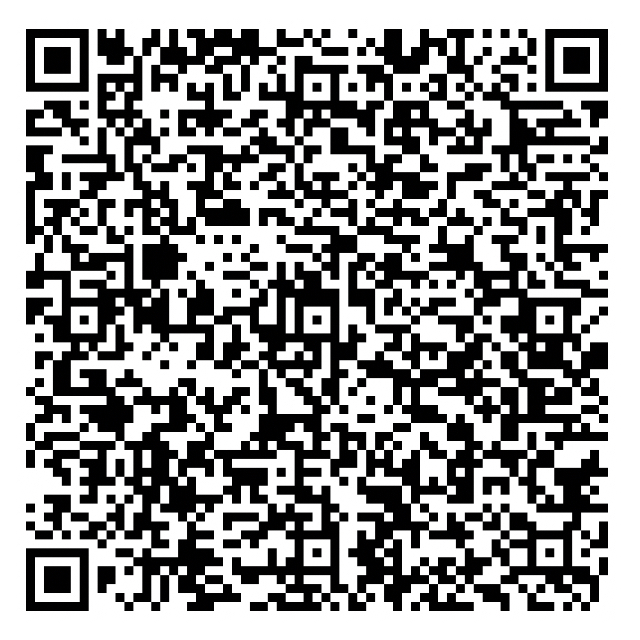

+
+
+
+
DIGITAL TIP JAR • $1.00
SUPPORT THE PROJECT
This app is 100% free! If you enjoyed generating your 4K Keshi card, dropping $1 into our tip jar helps cover site hosting and student project costs.

Scan Zelle QR Code HereSave your Zelle QR as zelle-qr.png
OR SEND DIRECTLY VIA ZELLE APP:
your-zelle-email@domain.com
Tip: Please include your Instagram / X handle or matched Keshi song in the Zelle memo!